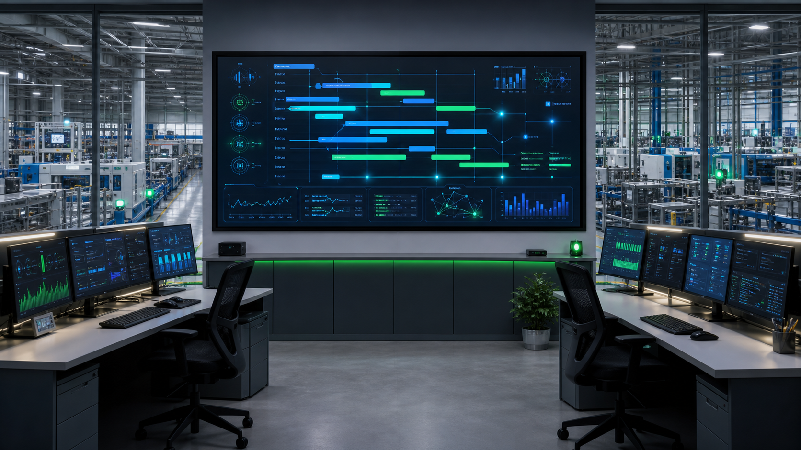

當企業營收突破一定規模，Excel 和紙本表單開始成為成長的阻力。訂單追不到、庫存對不上、財務報表永遠晚一個月——這是台灣超過 80% 中小製造業的共同痛點。鼎新數智（原鼎新電腦）深耕台灣製造業 30 年，在 2025–2026 年以「AI + 雲端 + 智慧製造」三引擎全面升級產品線。本文從 IT 系統整合商的視角，拆解鼎新 ERP 的產品矩陣、AI 功能與實際導入效益。
鼎新數智是誰？
鼎新電腦於 2024 年底正式更名為「鼎新數智」，是台灣本土規模最大的 ERP 廠商。股票代號鼎捷數智，2025 年被券商列入「工業 AI」推薦標的。在台灣中大型製造業擁有穩固市占，產業涵蓋電子零組件、機械設備、五金加工、汽車零件、醫療器材、食品製造等。
鼎新真正的護城河不在技術本身，而在 對台灣製造業流程的深度理解 與 30 年累積的產業 know-how。當國際大廠的 ERP 需要大量客製才能符合台灣在地稅制與行業慣例時，鼎新的產業模板已預先內建這些邏輯。
三大產品線完整比較
鼎新的產品線覆蓋從微型企業到中大型製造業，三條產品線定位清晰：
| 產品 | 定位 | 適合規模 | 部署方式 | 核心特色 |
|---|---|---|---|---|
| T100 | 入門輕量 ERP | 小型、中小企業 | 地端 / 雲端 | 快速導入、模組化選購 |
| A1 | 旗艦級製造 ERP | 中大型製造業 | 地端為主 | 完整製造模組、深度客製 |
| A1 Cosmos | 雲原生旗艦平台 | 中大型（主力推廣） | 公有 / 私有 / 混合雲 | 微服務、Low-Code、AI Ready |
🔑 關鍵理解：A1 Cosmos 是鼎新目前全力主推的旗艦產品。它將 A1 的成熟製造模組重構到 Cosmos 雲原生平台上，兼具 A1 的產業深度與 Cosmos 的技術現代化。特色包括微服務架構、Low-Code 低程式碼開發平台、AI Ready 設計、以及公有雲 / 私有雲 / 混合雲彈性部署。
2025–2026 四大核心趨勢
1. AI 深度整合（最大看點）
鼎新在 2025–2026 年推出六大 AI 助理，涵蓋智慧排程、需求預測、異常偵測、智慧採購等領域。搭配 JACKSOFT 稽核機器人（JBOT）實現自動化財務稽核。整體方向是朝 Agentic AI 流程自動化發展——AI 不只輔助判斷，而是能主動執行動作。
2. 雲端化與 SaaS 轉型
從一次性 License 轉向訂閱制，改變收入結構與客戶關係。Cosmos 平台是這波轉型的核心載體，讓客戶可以按用量付費而非一次買斷。對企業而言，這意味著前期導入成本降低、升級維護由鼎新負責。
3. 智慧製造（Industry 4.0）
ERP + MES + IoT + AI Agent 的四合一整合，實現預測性維護、視覺 AI 品質檢測、AGV/AMR 整合。已公布友上工業、偉勝等成功案例，顯示鼎新正從純 ERP 走向智慧製造平台。
4. ESG 與資安
碳盤查模組、ESG 報表、AI 資安強化——順應金管會要求上市櫃公司 2026 年起揭露 ESG 資訊的趨勢，鼎新已將 ESG 功能內建至核心產品線。

市場定位與競爭分析
在台灣 ERP 市場中，鼎新的競爭定位非常明確：
| 對手 | 定位 | 鼎新 vs 對手 |
|---|---|---|
| SAP / Oracle | 高端國際大廠 | 鼎新費用低 50-70%，在地客製更強，但全球化多據點管控不如 SAP |
| 金蝶 / 用友 | 中國市場 | 鼎新在台灣服務網絡與在地合規性遠勝 |
| ERPNext | 開源免費 | 開源方案對極小型企業有吸引力，但缺乏產業模板與在地支援 |
| NetSuite | 雲端原生國際 ERP | UI/UX 現代化程度高於鼎新，但台灣製造業深度客製能力不及 |
一句話總結競爭優勢：鼎新的勝負手在於——在 SAP 太貴、開源太陽春的中間地帶，用「AI + 雲端 + 在地服務」三角組合守住中大型製造業客戶。
客戶導入效益（實際數據）
以下數據來自鼎新公開案例與業界回報：
| 指標 | 導入前 | 導入後 | 改善幅度 |
|---|---|---|---|
| 庫存週轉率 | — | — | ↑ 25–45% |
| 生產準交率 | 75–85% | 92–98% | ↑ 10–15 個百分點 |
| 月結帳時間 | 7–12 天 | 1–3 天 | 縮短 70–80% |
| 投資回收期 | — | 12–18 個月 | 多數客戶期內回收 |
導入前的三大風險評估
⚠️ 風險一：UI/UX 落差。鼎新的介面相比 NetSuite 等雲端原生 ERP 顯得老舊，學習曲線陡峭。部分用戶直言「有口皆碑的爛」。若團隊對於操作體驗要求高，建議先申請試用評估。
⚠️ 風險二：客製化陷阱。鼎新客製能力強是把雙面刃——過度客製可能導致升級困難、維護成本飆升。建議以標準流程為主，只在真正差異化的環節客製。
⚠️ 風險三：導入陣痛期。ERP 導入本質是組織變革，不只是 IT 專案。中大型全面導入通常需要 6–18 個月，期間營運不能停擺。建議分批上線，先財務→再進銷存→最後製造。
ZoneTech 觀點：誰適合、誰不適合？
作為服務超過 500 家企業的 IT 整合商，我們的判斷是：
✅ 適合導入鼎新 ERP 的企業：
- 台灣中型製造業（50–500 人），特別是電子、機械、五金、汽車零件、食品加工
- 已有基本 IT 基礎但缺乏整合性系統的成長型企業
- 需要在地化深度客製（台灣稅制、行業法規）
- 願意接受「功能強 > 介面美」的務實選擇
❌ 可能不適合的企業：
- 極小型公司（少於 20 人、流程簡單）—— 雲端記帳軟體可能更務實
- 跨國集團需要全球化統一管控 —— SAP/Oracle 更適合
- UI/UX 為首要考量、且預算充足的數位原生企業 —— NetSuite 值得比較
正在評估 ERP？讓 ZoneTech 幫你釐清需求
蓋斯克科技 10 年企業 IT 服務經驗，從網路基礎架構到 ERP 導入評估，
提供一站式技術顧問服務。免費到府勘查，48 小時內提供初步建議方案。
📞 02-2717-1019 LINE：@zonetech
結論：鼎新 ERP 的 2026 關鍵命題
鼎新數智 2026 年的核心命題很清楚：在 SAP/Oracle 太貴、開源太簡陋的市場真空帶，用 AI + 雲端 + 在地服務的組合守住台灣製造業客戶。A1 Cosmos 是這場轉型的關鍵武器——它承載了鼎新從「賣軟體」轉向「賣服務」的商業模式變革。
但風險同樣明確：UI/UX 的改善速度，將決定鼎新能否抵擋 NetSuite 等雲端原生對手的蠶食。對於正在評估 ERP 的企業來說，2026 年是觀察鼎新「AI 落地深度」與「Cosmos 平台成熟度」的關鍵年份。